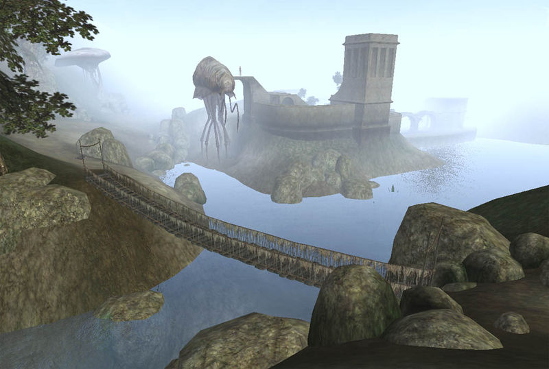

Morrowind:Suran
Morrowind: Places
| Suran |
| Alignment: Hlaalu |
| Region: Ascadian Isles |
|
Transport:
Almsivi Intervention:
Divine Intervention:
Silt Strider:
|
Services:
|
 Suran |
 Desele's House of Earthly Delights |
|  View of Suran from Ascadian Isles |
View of Suran from Lake Masobi |
Suran is a medium-sized town situated on the eastern coast of Lake Masobi, within the Ascadian Isles. Its architecture resembles a typical Hlaalu market town, complete with a watchtower and a small temple. House Redoran originally controlled the town, but it was later taken over by House Hlaalu. During the late Third Era, it served as the northern headquarters for Hlaalu slavers doing business with nearby plantations. Suran also functions as a stopover for pilgrims and adventurers heading northeast into the Molag Amur region and Mount Kand.
Main Town Square
Desele's House of Earthly Delights, an interesting tavern to go for a good time, is located west of the main town square. There are several traders, a Smith, a Clothier and an Apothecary around the square.
Towards the hill, the Suran Tradehouse houses a trader, the Nightblade An-Zaw offers some training, and Haj-Ei lives upstairs.
Oran Manor and Temple
Located on a hill to the east, an Orc warrior on patrol on the stairs is clad in Glass Armor. The priest Elynu Saren in the small Tribunal Temple serves pilgrims with spells and potions. Oran Manor is the home of a Hlaalu Noble, Avon Oran. The manor has a pawnbroker and a few trainers.
Getting There and Around
The Silt Strider port is up the stairs next to the Guard tower. A good road leads west along the Lake past the Fields of Kummu to Pelagiad and beyond. A path east leads to Molag Mar and onto a Foyada to Mount Kand and beyond. An easy way to get there is taking the Silt Strider from Balmora.